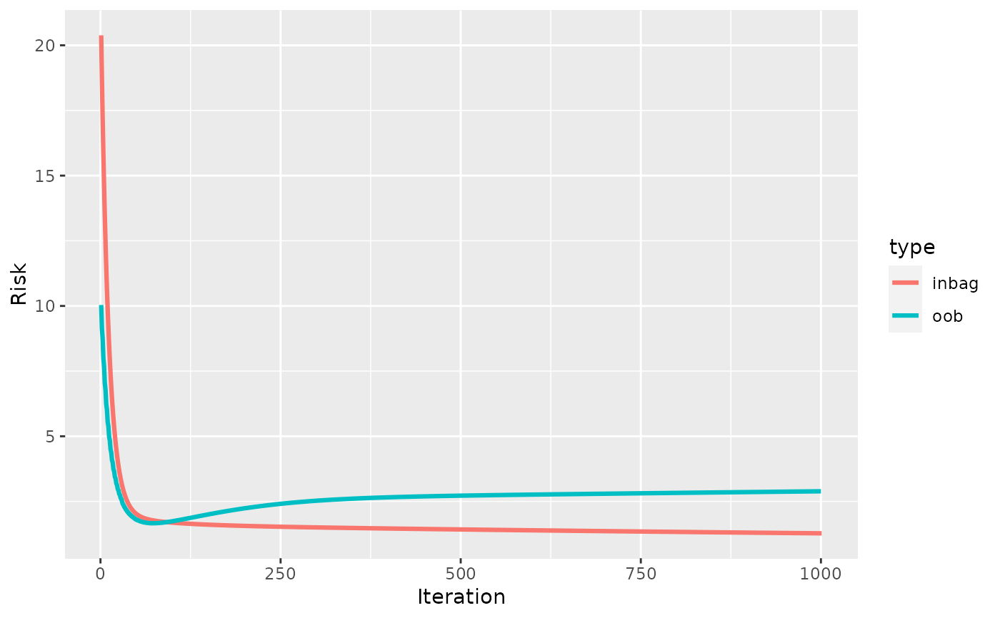
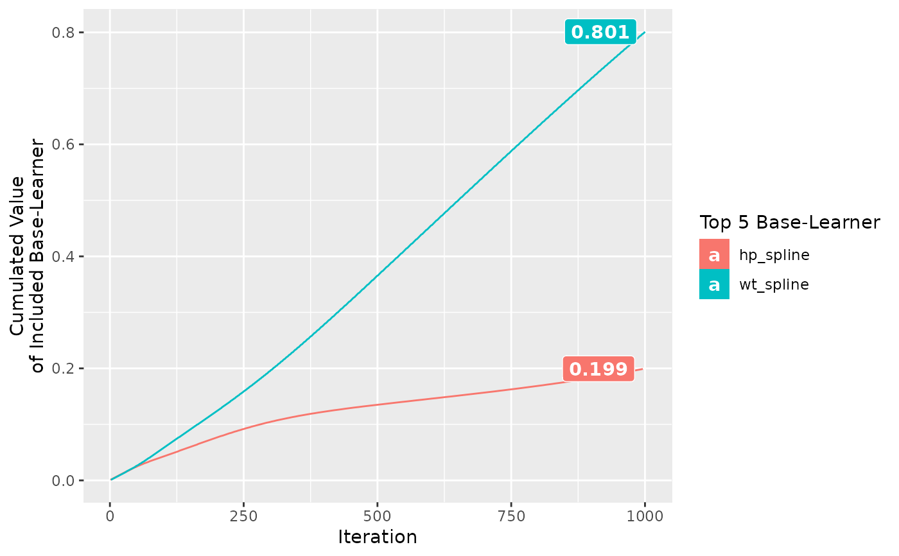

Compboost API
Compboost.RdCompboost wraps the S4 class system exposed by Rcpp to make defining
objects, adding objects, the training, calculating predictions, and plotting much easier.
As already mentioned, the Compboost R6 class is just a wrapper and compatible
with the most S4 classes.
Format
R6Class object.
Usage
# Constructor cboost = Compboost$new(data, target, optimizer = OptimizerCoordinateDescent$new(), loss, learning_rate = 0.05, oob_fraction = NULL) # Member functions cboost$addLogger(logger, use_as_stopper = FALSE, logger_id, ...) cbboost$addBaselearner(feature, id, bl_factory, data_source = InMemoryData, ...) cbboost$train(iteration = 100, trace = -1) cboost$getCurrentIteration() cboost$prepareData(newdata) cboost$prepareResponse(response) cboost$predict(newdata = NULL, as_response = FALSE) cboost$getInbagRisk() cboost$getSelectedBaselearner() cboost$getEstimatedCoef() cboost$plot(blearner_name = NULL, iters = NULL, from = NULL, to = NULL, length_out = 1000) cboost$getBaselearnerNames() cboost$getLoggerData() cboost$calculateFeatureImportance(num_feats = NULL) cboost$plotFeatureImportance(num_feats = NULL) cboost$plotInbagVsOobRisk() cboost$plotBlearnerTraces(value = 1, n_legend = 5L)
Arguments
For Compboost$new():
data[
data.frame]
A data frame containing the data (features as well as target).target[
character(1)orS4 Response]
Character value containing the target variable orResponseobject. Note that the loss has to match the data type of the target.optimizer[
S4 Optimizer]
An initializedS4 Optimizerobject exposed by Rcpp (e.g.OptimizerCoordinateDescent$new()) to specify how features are selected in each iteration.loss[
S4 Loss]
InitializedS4 Lossobject exposed by Rcpp which is used to calculate the risk and pseudo residuals (e.g.LossQuadratic$new()).learning_rage[
numeric(1)]
Learning rate to shrink the new parameters in each iteration.oob_fraction[
numeric(1)]
Fraction of how much data are used to calculate the out of bag risk.
For cboost$addLogger():
logger[
S4 Logger]
UninitializedS4 Loggerclass object that is registered in the model. See the details for possible choices.use_as_stopper[
logical(1)]
Logical value indicating whether the new logger should also be used as stopper (early stopping). Default value isFALSE.logger_id[
character(1)]
Id of the new logger. This is necessary to be able to register multiple logger....
Further arguments passed to the constructor of theS4 Loggerclass specified inlogger. For possible arguments see details or the help pages (e.g.?LoggerIteration).
For cboost$addBaselearner():
feature[
character()]
Vector of column names that are used as input data matrix for a single base-learner. Note that not every base-learner supports the use of multiple features (e.g. the spline base-learner does not).id[
character(1)]
Id of the base-learners. This is necessary since it is possible to define multiple learners using equal features.bl_factory[
S4 Factory]
Uninitialized base-learner factory given asS4 Factoryclass. See the details for possible choices.data_source[
S4 Data]
Data source object. Just in memory data objects are supported at the moment....
Further arguments passed to the constructor of theS4 Factoryclass specified inbl_factory. For possible arguments see the help pages (e.g.?BaselearnerPSplineFactory) of theS4classes.
For cboost$train():
iteration[
integer(1)]
Number of iterations that are trained. If the model is already trained it sets to the given number by going back to already trained base-learners or it trains new ones. Note: This function defines an iteration logger with the id_iterationswhich is used as stopper for the new training.trace[
integer(1)]
Integer indicating after how many iterations a trace should be printed. Specifyingtrace = 10, then every 10th iteration is printed. If you do not want to print the trace settrace = 0. Default is -1 which means that in total 40 iterations are printed.
For cboost$predict():
newdata[
data.frame()]
Data to predict on. If newdata equalsNULLpredictions on the training data are returned.
For cboost$plot():
blearner_name[
character(1)]
Character name of the base-learner to plot the contribution to the response. Available choices forblearner_nameusecboost$getBaselearnerNames().iters[
integer()]
Integer vector containing the iterations the user wants to visualize.from[
numeric(1)]
Lower bound for the x axis (should be smaller thanto).to[
numeric(1)]
Upper bound for the x axis (should be greater thanfrom).length_out[
integer(1)]
Number of equidistant points betweenfromandtoused for plotting.
For cboost$calculateFeatureImportance() and cboost$plotFeatureImportance():
num_feats[
integer(1)]
Number of features for which the Importance will be returned.
For cboost$plotBlearnerTraces:
value[
numeric()]
Numeric value of length 1 or same length as the number iterations which is accumulated by the selected base-learner.n_legend[
integer(1L)]
Number of how many base-learner are highlighted (base-learner are highlighted by choosing the topn_legendaccumulated values).
Details
Loss
Available choices for the loss are:
LossQuadratic(Regression)LossAbsolute(Regression)LossQuantile(Regression)quantile[
numeric(1)]
Quantile that is boosted.
LossHuber(Regression)delta[
numeric(1)]
Defining the interval [-d,d] around 0 for quadratic approximation.
LossBinomial(Binary Classification)LossCustom(Custom)
(For each loss take also a look at the help pages (e.g. ?LossBinomial))
Logger
Available choices for the logger are:
LoggerIteration: Logs the current iteration. Additional arguments:max_iterations[integer(1)]Maximal number of iterations.
LoggerTime: Logs the elapsed time. Additional arguments:max_time[integer(1)]Maximal time for the computation.
time_unit[character(1)]Character to specify the time unit. Possible choices are
minutes,seconds, ormicroseconds.
LoggerInbagRisk:used_loss[S4 Loss]Loss as initialized
S4 Losswhich is used to calculate the empirical risk. See the details for possible choices.eps_for_break[numeric(1)]This argument is used if the logger is also used as stopper. If the relative improvement of the logged inbag risk falls below this boundary, then the stopper breaks the algorithm.
patience[integer(1)]Specifying, how many iteration should fall consecutively below
eps_for_breakbefore we stop.
LoggerOobRisk:used_loss[S4 Loss]Loss as initialized
S4 Losswhich is used to calculate the empirical risk. See the details for possible choices.eps_for_break[numeric(1)]This argument is used if the logger is also used as stopper. If the relative improvement of the logged inbag risk falls above this boundary the stopper breaks the algorithm.
oob_data[list]A list which contains data source objects which corresponds to the source data of each registered factory. The source data objects should contain the out of bag data. This data is then used to calculate the new predictions in each iteration.
oob_response[vector]Vector which contains the response for the out of bag data given within
oob_data.patience[integer(1)]Specifying, how many iteration should fall consecutively below
eps_for_breakbefore we stop.
Note:
Even if you do not use the logger as stopper you have to define the arguments such as
max_time.
Fields
data[data.frame]Data used for training the algorithm.
data_oob[data.frame]Data used for out of bag tracking.
oob_fraction[numeric(1)]Fraction of how much data are used to track the out of bag risk.
response[vector]Response object that is created or passed in target for training the model.
response_oob[vector]Response object that is created by specifying the
oob_fractionto evaluate each iteration.target[character(1)]Name of the target variable.
id[character(1)]Name of the given dataset.
optimizer[S4 Optimizer]Optimizer used within the fitting process.
loss[S4 Loss]Loss used to calculate pseudo residuals and empirical risk.
learning_rate[numeric(1)]Learning rate used to shrink the estimated parameter in each iteration.
model[S4 Compboost_internal]S4 Compboost_internalclass object from which the main operations (such as train) are called.bl_factory_list[S4 FactoryList]List of all registered factories represented as
S4 FactoryListclass.positive_category[character(1)]Character containing the name of the positive class in the case of (binary) classification.
stop_if_all_stoppers_fulfilled[logical(1)]Logical indicating whether all stopper should be used simultaneously or if it is sufficient to just use the first stopper to stop the algorithm.
Methods
addLoggermethod to add a logger to the algorithm (Note: This is just possible before the training).
addBaselearnermethod to add a new base-learner to the algorithm (Note: This is just possible before the training).
getCurrentIterationmethod to get the current iteration on which the algorithm is set.
trainmethod to train the algorithm.
predictmethod to predict on a trained object.
getSelectedBaselearnermethod to get a character vector of selected base-learner.
getEstimatedCoefmethod to get a list of estimated coefficient of each selected base-learner.
plotmethod to plot individual feature effects.
getBaselearnerNamesmethod to get the names of the registered factories.
prepareDatamethod to prepare data to track the out of bag risk of an arbitrary loss/performance function.
getLoggerDatamethod to the the logged data from all registered logger.
calculateFeatureImportancemethod to calculate feature importance.
plotFeatureImportancemethod to plot the feature importance calculated by
calulateFeatureImportance.plotInbagVsOobRiskmethod to plot the inbag vs the out of bag behavior. This is just applicable if a logger with name
oob_loggerwas registered. This is automatically done if theoob_fractionis set.plotBlearnerTracesmethod to plot traces how the base-learner are selected in combination with a measure of interest, e.g. how the empirical risk was minimized throughout the selection process.
Examples
cboost = Compboost$new(mtcars, "mpg", loss = LossQuadratic$new(), oob_fraction = 0.3) cboost$addBaselearner("hp", "spline", BaselearnerPSpline, degree = 3, n_knots = 10, penalty = 2, differences = 2) cboost$addBaselearner("wt", "spline", BaselearnerPSpline) cboost$train(1000)#> 1/1000 risk = 19 oob_risk = 10 #> 25/1000 risk = 3.7 oob_risk = 2.9 #> 50/1000 risk = 2 oob_risk = 1.8 #> 75/1000 risk = 1.8 oob_risk = 1.7 #> 100/1000 risk = 1.7 oob_risk = 1.7 #> 125/1000 risk = 1.6 oob_risk = 1.9 #> 150/1000 risk = 1.6 oob_risk = 2 #> 175/1000 risk = 1.6 oob_risk = 2.1 #> 200/1000 risk = 1.6 oob_risk = 2.2 #> 225/1000 risk = 1.5 oob_risk = 2.3 #> 250/1000 risk = 1.5 oob_risk = 2.4 #> 275/1000 risk = 1.5 oob_risk = 2.5 #> 300/1000 risk = 1.5 oob_risk = 2.5 #> 325/1000 risk = 1.5 oob_risk = 2.6 #> 350/1000 risk = 1.5 oob_risk = 2.6 #> 375/1000 risk = 1.5 oob_risk = 2.6 #> 400/1000 risk = 1.5 oob_risk = 2.7 #> 425/1000 risk = 1.5 oob_risk = 2.7 #> 450/1000 risk = 1.4 oob_risk = 2.7 #> 475/1000 risk = 1.4 oob_risk = 2.7 #> 500/1000 risk = 1.4 oob_risk = 2.7 #> 525/1000 risk = 1.4 oob_risk = 2.7 #> 550/1000 risk = 1.4 oob_risk = 2.7 #> 575/1000 risk = 1.4 oob_risk = 2.8 #> 600/1000 risk = 1.4 oob_risk = 2.8 #> 625/1000 risk = 1.4 oob_risk = 2.8 #> 650/1000 risk = 1.4 oob_risk = 2.8 #> 675/1000 risk = 1.4 oob_risk = 2.8 #> 700/1000 risk = 1.4 oob_risk = 2.8 #> 725/1000 risk = 1.4 oob_risk = 2.8 #> 750/1000 risk = 1.3 oob_risk = 2.8 #> 775/1000 risk = 1.3 oob_risk = 2.8 #> 800/1000 risk = 1.3 oob_risk = 2.8 #> 825/1000 risk = 1.3 oob_risk = 2.8 #> 850/1000 risk = 1.3 oob_risk = 2.8 #> 875/1000 risk = 1.3 oob_risk = 2.9 #> 900/1000 risk = 1.3 oob_risk = 2.9 #> 925/1000 risk = 1.3 oob_risk = 2.9 #> 950/1000 risk = 1.3 oob_risk = 2.9 #> 975/1000 risk = 1.3 oob_risk = 2.9 #> 1000/1000 risk = 1.3 oob_risk = 2.9 #> #> #> Train 1000 iterations in 0 Seconds. #> Final risk based on the train set: 1.3 #>#> #> hp_spline wt_spline #> 199 801cboost$plot("hp_spline")cboost$plotInbagVsOobRisk()cboost$plotBlearnerTraces()